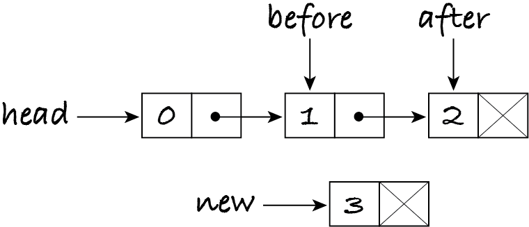
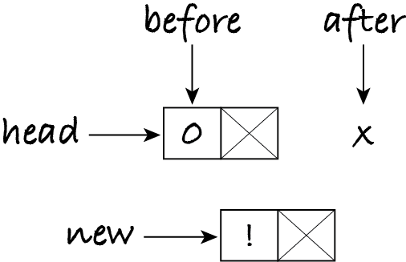
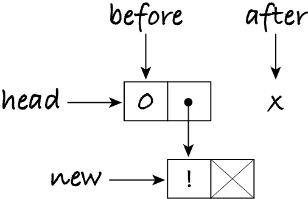

6.7. Linked lists
Arrays keep all data (or pointers to data) in contiguous memory to support constant-time access. Another approach to implementing sequences scatters the data over memory. There’s a reason and a method to this apparent madness.
A linked list is a chain of nodes, each with an element of the sequence (or pointer to it) and a pointer to the next node. The first node is called the head of the linked list. The last node has a null pointer, as there’s no next node. The next figure shows a linked list with integers 0, 1 and 2. The X represents the null pointer and marks the end of the linked list.
The head variable refers to the first node. If head is the null pointer, then the list is empty.
6.7.1. Traversing a linked list
Traversing a collection means to go through the collection’s items, one by one. This is typically done with iteration: a for- or while-loop. (Chapter 12 will show how to traverse collections without iteration.)
Assuming each node is an object with two instance variables item and next, then an algorithm to traverse a linked list and process each item is:
let current be head
while current isn’t the null pointer:
process current.item
let current be current.next
Step 2.1 does whatever is needed for the problem at hand and step 2.2 updates the reference to now refer to the next node. If the linked list is empty, the step 2 condition is false and the loop doesn’t execute.
This algorithm can be adapted to access the item at a given index of the sequence by replacing the while-loop with a for-loop. This means that accessing an item takes linear time with linked lists, more specifically Θ(i) to get the item at index i, whereas with arrays it takes constant time.
6.7.2. Inserting an item
The algorithm to insert an item value at position index is more subtle. Here’s an outline of it:
First iterate over the linked list to obtain references to the nodes that will be before and after the new item. The ‘before’ node is at position index − 1; the ‘after’ node is at position index. Create a new node with the item to be inserted. Make the ‘before’ node point to the new node, and the new node point to the ‘after’ node. In this way the new node is now at position index and the ‘after’ node (and the rest of the list) has been ‘pushed’ one position up.
To illustrate the algorithm, let’s insert integer 3 in the sequence (0, 1, 2) at index 2, i.e. the resulting sequence should be (0, 1, 3, 2).
First we obtain references to the node at positions index − 1 and index:
let before be head
repeat index − 1 times:
let before be before.next
let after be before.next
Next we create a new node with the item to be inserted but without a next node:
let new be a node with item = value and next = null pointer
For our example the situation at this stage is:
Finally we change the pointers to put the new node between before and after.
let before.next be new
let new.next be after
Once the algorithm knows where to insert the new item, the insertion itself takes constant time: no copying of values takes place.
Let’s check the algorithm with our test table.
Case |
Pre-values |
index |
Post-values |
|---|---|---|---|
length 0 |
( ) |
0 |
(‘!’) |
length 1, before |
( 0 ) |
0 |
(‘!’, 0) |
length 1, after |
( 0 ) |
1 |
(0, ‘!’) |
length 2, before |
(0, 1) |
0 |
(‘!’, 0, 1) |
length 2, middle |
(0, 1) |
1 |
(0, ‘!’, 1) |
length 2, after |
(0, 1) |
2 |
(0, 1, ‘!’) |
For the first test case (empty sequence), the head variable is the null pointer and so is before after step 1. Variable index has value zero, so the loop is skipped, because it can’t be executed minus one times. Step 3 tries to access instance variable next but before is not pointing to a node. This kind of error is called null pointer dereference: we’re trying to dereference (i.e. access the object pointed by) before, but before is not a valid pointer.
A quick fix to the algorithm is to move step 4 (the creation of the new node) to the beginning and then handle empty and non-empty sequences separately.
let new be a node with item = value and next = null pointer
if head is the null pointer:
let head be new
otherwise:
let before be head
repeat index − 1 times:
let before be before.next
let after be before.next
let before.next be new
let new.next be after
Let’s move on to the second test: inserting the item at the start of a sequence of length one. Is the algorithm correct for this case?
Alas, it isn’t. If an item is inserted at the start, we must update the head variable to refer to the new node, but the algorithm never does so.
We can fix the algorithm by treating this edge case separately. The current head node becomes the node after the new node, which in turn becomes the head node.
let new be a node with item = value and next = null pointer
if head is the null pointer:
let head be new
otherwise if index = 0:
let after be head
let head be new
let new.next be after
otherwise:
let before be head
repeat index − 1 times:
let before be before.next
let after be before.next
let before.next be new
let new.next be after
Let’s move on to the third test, which inserts the item at index one of a sequence of length one, i.e. it appends the item. Is the algorithm correct for this case?
The sequence not being empty and the index not being zero, the algorithm executes step 1 and then step 4.1, making before refer to the first and only node in the linked list. The loop is repeated zero times, because index = 1. Step 4.3 sets after to be the null pointer. The situation is:
Step 4.4 links the ‘before’ node to the new node. Step 4.5 has no practical effect, because the new node’s next variable is already the null pointer. The final situation is as follows. The algorithm correctly appends items.
The algorithm works when there’s no node after the new node. This makes me realise that the part that handles insertions at the start (steps 3 to 3.3) also works for the empty list, when head and after are the null pointer. I can eliminate steps 2 and 2.1. I actually don’t need variable after and can reduce steps 3.1 to 3.3 and 4.3 to 4.5 to just two steps each. Here’s my final algorithm:
let new be a node with item = value and next = null pointer
if index = 0:
let new.next be head
let head be new
otherwise:
let before be head
repeat index − 1 times:
let before be before.next
let new.next be before.next
let before.next be new
Exercise 6.7.1
Outline an algorithm to remove the item at a given position index.
6.7.3. The LinkedSequence class
Python doesn’t allow us to manipulate pointers (memory addresses) directly: we can only refer to objects via variables. The most natural choice is to represent a null pointer as a variable with value None, but any other object that hasn’t got instance variables named ‘next’ and ‘item’ can be used: in this way a null pointer dereference becomes an attribute error in Python.
[1]:
node = None
node.next
---------------------------------------------------------------------------
AttributeError Traceback (most recent call last)
Cell In[1], line 2
1 node = None
----> 2 node.next
AttributeError: 'NoneType' object has no attribute 'next'
The node objects are just data: they don’t have operations. Writing a class with two instance variables and four methods to access and modify the variables is overkill. Since nodes are only meaningful in the context of linked lists, I define a Node class within the LinkedSequence class, and let the methods of the latter access the instance variables of nodes. This saves us from writing four trivial methods while keeping nodes hidden from users of sequences. Since Node is within
LinkedSequence, the constructor must be called by its full name: LinkedSequence.Node(item).
Here’s the class. Most methods of Sequence are implemented by traversing the linked list as explained above.
[2]:
%run -i ../m269_sequence
import math
class LinkedSequence(Sequence):
"""A linked list implementation of the sequence ADT."""
class Node:
"""A node in a linked list."""
def __init__(self, item: object) -> None:
"""Initialise the node with the given item."""
self.item = item
self.next = None
def __init__(self) -> None:
"""Initialise the sequence to be empty."""
self.head = None
def capacity(self) -> float:
"""Return how many items the sequence can hold: infinite."""
return math.inf # infinite capacity
def length(self) -> int:
"""Return the number of items in the sequence.
Postconditions: 0 <= self.length() <= self.capacity()
"""
size = 0
current = self.head
while current != None:
size = size + 1
current = current.next
return size
def get_item(self, index: int) -> object:
"""Return the item at position index.
Preconditions: 0 <= index < self.length()
Postconditions: the output is the n-th item of self, with n = index + 1
"""
current = self.head
for times in range(index): # noqa: B007
current = current.next
return current.item
def set_item(self, index: int, item: object) -> None:
"""Replace the item at position index with the given one.
Preconditions: 0 <= index < self.length()
Postconditions: post-self.get_item(index) == item
"""
current = self.head
for times in range(index): # noqa: B007
current = current.next
current.item = item
def insert(self, index: int, item: object) -> None:
"""Insert item at position index.
Preconditions: 0 <= index <= self.length() < self.capacity()
Postconditions: post-self is the sequence
pre-self.get_item(0), ..., pre-self.get_item(index - 1),
item, pre-self.get_item(index), ...,
pre-self.get_item(pre-self.length() - 1)
"""
new = LinkedSequence.Node(item)
if index == 0:
new.next = self.head
self.head = new
else:
before = self.head
for times in range(index - 1): # noqa: B007
before = before.next
new.next = before.next
before.next = new
And again, let’s test the operations.
[3]:
%run -i ../m269_test
test_init(LinkedSequence())
for length in range(10):
print("Testing length", length)
test_append(LinkedSequence(), length)
test_insert_start(LinkedSequence(), length)
test_set_item(LinkedSequence(), length)
Testing length 0
Testing length 1
Testing length 2
Testing length 3
Testing length 4
Testing length 5
Testing length 6
Testing length 7
Testing length 8
Testing length 9
Exercise 6.7.2 (optional)
Add a remove method to the LinkedSequence class and test it with this code:
[4]:
for length in range(5):
print("Testing length", length)
test_remove(LinkedSequence(), length)
6.7.4. Linked list v. array
The sequence ADT can be implemented with dynamic arrays and with linked lists. The choice depends on which operations we require to be most efficient. Here’s a table of the complexities for some operations on sequence s and index i.
Sequence operation |
Dynamic array |
Linked list |
|---|---|---|
get item at i |
Θ(1) |
Θ(i) |
replace item at i |
Θ(1) |
Θ(i) |
insert at i = 0 |
Θ(│s│) |
Θ(1) |
insert at i = │s│ (append) |
Θ(1) |
Θ(│s│) |
insert elsewhere |
Θ(│s│ − i) |
Θ(i) |
The main advantage of arrays over linked lists is the constant-time access to items, whereas linked lists have to be traversed. Doing operations at the start of a list can be efficient, and we’ll take advantage of that in the next chapter, because linked lists don’t require copying items when inserting or removing one. Linked lists are never resized. They require more memory than arrays (one pointer per item), but dynamic arrays also waste memory when the size is lower than the capacity.
Some operations on linked lists can become more efficient with extra data. The implementation above computes the length in linear time, by counting items while iterating over the linked list. It’s also possible to obtain the length in constant time, by adding an instance variable that is initially zero and is incremented (or decremented) when an item is inserted (or removed), as done with dynamic arrays. This is an example of a space–time tradeoff: we are willing to increase the memory usage of a linked list object to reduce the run-time of an operation.
Note: Each data structure makes some operations more efficient than others. The best data structure for the problem at hand is the one that favours the operations we need more frequently.
Exercise 6.7.3
How could you make the append operation take constant time on linked lists?